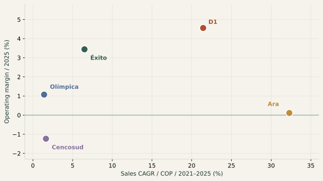
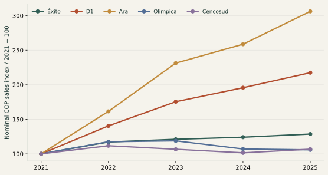
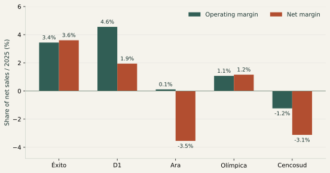
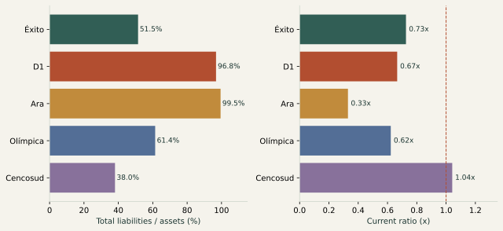

Crecer no basta.
Growth is not enough.
¿Las empresas que más crecen son también las más rentables? Un análisis de Éxito, D1, Ara, Olímpica y Cencosud Colombia.
Are the fastest-growing companies also the most profitable? An analysis of Éxito, D1, Ara, Olímpica and Cencosud Colombia.
Por John Rodríguez · Proyecto independiente · 17 de noviembre de 2026
By John Rodríguez · Independent project · 17 November 2026
El tamaño no resuelve la pregunta.
Scale does not answer the question.
Una empresa puede aumentar sus ventas, operar con márgenes estrechos y terminar el año con pérdidas. Para evitar un ranking superficial, separé tres lecturas: expansión comercial, conversión en utilidad y estructura del balance.
A company can expand sales, operate on thin margins and still end the year at a loss. To avoid a superficial ranking, I separated three questions: sales expansion, conversion into profit and balance-sheet structure.
CAGR de ventas en COP de Ara. El mayor crecimiento de esta muestra no equivale al mayor margen.
Ara sales CAGR in COP. The fastest growth in this sample is not the highest margin.
Margen operacional de D1 en 2025. La mayor conversión operacional de la muestra.
D1 operating margin in 2025. The highest operating conversion in the sample.
Razón corriente de Cencosud en 2025. Mejor cobertura contable, con pérdida neta.
Cencosud current ratio in 2025. Higher accounting coverage alongside a net loss.

Crecimiento nominal en COP. No representa crecimiento real, ventas mismas tiendas ni participación de mercado.
Nominal COP growth. This does not represent real growth, same-store sales or market share.
El mismo punto de partida; trayectorias distintas.
The same starting point; different paths.

Al llevar las ventas de 2021 a un índice de 100, se puede comparar el ritmo de expansión sin confundirlo con el tamaño inicial. Ara y D1 se separan del resto de la muestra. Esto no identifica cuánto crecimiento proviene de nuevas tiendas, precios o volumen.
Indexing 2021 sales to 100 compares expansion rates without confusing them with initial scale. Ara and D1 pull away from the rest of the sample. This does not identify the contribution of new stores, prices or volume.
De vender a ganar: el recorrido importa.
From sales to earnings: the journey matters.

D1 convierte mejor las ventas en resultado operacional. D1 combina un crecimiento nominal de ventas de 21,4% anual compuesto con un margen operacional de 4,6% en 2025, el más alto de esta muestra. Su margen EBITDA es 8,0%, pero la utilidad neta representa 1,9% de ventas. EBITDA no equivale a caja disponible.
D1 leads operating conversion. D1 combines 21.4% nominal COP sales CAGR with a 4.6% operating margin in 2025, the highest in this sample. Its EBITDA margin is 8.0%, but net income is 1.9% of sales. EBITDA is not available cash.
Éxito exige separar la tienda de las inversiones. En 2025 Éxito registra margen operacional de 3,4% y margen neto de 3,6%. Sus estados separados incluyen COP 459.651 millones por participación en ganancias de subsidiarias y negocios conjuntos. El margen neto no mide exclusivamente la operación comercial colombiana.
Éxito requires separating operations from investments. Éxito reports a 3.4% operating margin and a 3.6% net margin in 2025. Its separate statements include COP 459,651 million of profit from subsidiaries and joint ventures. Net margin is not a pure measure of Colombian retail operations.
En Éxito, el PDF separado de 2025 confirma COP 459.651 millones por participación en resultados de subsidiarias y negocios conjuntos. La conclusión compara entidades legales, no rentabilidad pura de tiendas.
Éxito’s 2025 separate-statement PDF confirms COP 459,651 million from subsidiaries and joint ventures. The comparison concerns legal entities, not pure store profitability.
Cinco empresas, con las definiciones a la vista.
Five companies, with definitions in view.
Selecciona un año. Ventas en millones de USD; márgenes y liquidez calculados en COP. El CAGR siempre abarca 2021–2025.
Select a year. Sales are in USD millions; margins and liquidity use COP. CAGR always covers 2021–2025.
| Company | Sales USD m | EBIT % | Net % | Current x | Liabilities / assets |
|---|---|---|---|---|---|
| Éxito | 4,052.9 | 3.4% | 3.6% | 0.73 | 51.5% |
| D1 | 5,320.6 | 4.6% | 1.9% | 0.67 | 96.8% |
| Ara | 4,031.1 | 0.1% | -3.5% | 0.33 | 99.5% |
| Olímpica | 1,713.7 | 1.1% | 1.2% | 0.62 | 61.4% |
| Cencosud | 1,092.0 | -1.2% | -3.1% | 1.04 | 38.0% |
Los pasivos no son todos deuda bancaria.
Not all liabilities are bank debt.

D1 y Ara registran pasivos equivalentes a 96,8% y 99,5% de activos en 2025. Son pasivos totales, no deuda bancaria: hay que estudiar proveedores, arrendamientos y financiación vinculada. Patrimonios pequeños amplifican el ROE; no usaremos ese ratio como ranking de calidad.
D1 and Ara report liabilities equal to 96.8% and 99.5% of assets in 2025. These are total liabilities, not bank debt; supplier balances, leases and related-party funding require review. Small equity bases magnify ROE, which is not used as a quality ranking.
El capital de trabajo negativo requiere contexto. No basta para afirmar insolvencia. El ciclo estimado usa saldos promedio y costo de ventas como aproximación de compras; la estacionalidad y las clasificaciones pueden afectar la comparación.
Negative working capital needs context and does not establish insolvency. The estimated cash cycle uses average balances and COGS as a purchases proxy; seasonality and classifications may affect the comparison.
Un resultado que se puede seguir hasta la fórmula.
A result you can trace back to the formula.
Qué hice
What I did
Organicé los archivos suministrados por empresa, año, tipo de estado y moneda. Convertí cifras almacenadas como texto, conservé los signos contables y documenté las partidas no conciliadas. Calculé indicadores en Excel y contrasté ROA y ROE con EMIS usando su definición de saldos de cierre.
I organized the supplied files by company, year, statement type and currency. I converted numeric text, preserved accounting signs and documented unreconciled items. Excel ratios were checked independently; ROA and ROE were also compared with EMIS using matching closing-balance definitions.
Qué no afirman estos datos
What these data do not establish
No hay presupuesto, forecast, participación de mercado ni diagnóstico causal de aperturas o precios. El EBITDA suministrado no es necesariamente recurrente ni homogéneo. Las partidas de flujo pendientes no sustentan conclusiones sobre generación de caja.
There is no budget, forecast, market-share estimate or causal diagnosis of store openings or prices. Supplied EBITDA is not necessarily recurring or homogeneous. Unresolved cash-flow items do not support cash-generation conclusions.
Definiciones y comparabilidadDefinitions and comparability
CAGR: cuatro intervalos entre 2021 y 2025. ROA/ROE: saldos promedio; 2021 queda sin calcular. Razón corriente: activos corrientes / pasivos corrientes. Éxito: estados separados. Las otras entidades: individuales según exportación. D1 presenta un salto de activos en 2024 pendiente de explicar.
CAGR: four intervals between 2021 and 2025. ROA/ROE use average balances; 2021 is unavailable. Current ratio: current assets / current liabilities. Éxito: separate statements. Other entities: individual according to export. D1 has an unexplained asset discontinuity in 2024.
Calidad y verificaciónQuality and verification
El Excel conserva siete excepciones de controles de flujo de la extracción. El cero de efectivo final de Éxito 2025 se resuelve en su PDF original; otras seis diferencias siguen abiertas. Las cifras seleccionadas de Éxito 2025/2024 se contrastaron con ese documento; las demás conservan procedencia EMIS, sin afirmar reextracción regulatoria completa.
The workbook retains seven cash-flow control exceptions in the extract. Éxito’s 2025 closing-cash zero is resolved in its original PDF; six other differences remain open. Selected Éxito 2025/2024 figures were tied to that document; other records retain EMIS provenance without claiming full regulatory re-extraction.
Abre el modelo. Cuestiona el diagnóstico.
Open the model. Challenge the diagnosis.
El Excel contiene datos editables, fórmulas, un dashboard con selectores y controles. El informe reúne las conclusiones en español e inglés.
The workbook contains editable inputs, formulas, a dashboard with selectors and checks. The report presents the findings in Spanish and English.
Fuentes y atribución
Sources and attribution
Origen indicado en los archivos: Superintendencia Financiera y Superintendencia de Sociedades. Canal de consulta y extracción: EMIS University. Cálculos, visualizaciones e interpretación: John Rodríguez. No se incluyen informes ni archivos originales de EMIS.
Original sources stated in the files: Superintendencia Financiera and Superintendencia de Sociedades. Consultation and extraction channel: EMIS University. Calculations, visualizations and interpretation: John Rodríguez. Original EMIS files and reports are not bundled.
- Éxito · Estados separados 2025/2024 · PDF pp. 13–14, 17
- Superfinanciera · SIMEV / RNVE
- Supersociedades · SIIS
- CFA Institute · Financial Ratio List
Proyecto independiente de análisis histórico. No es una recomendación de inversión ni una calificación crediticia.
Independent historical analysis project. Not an investment recommendation or credit rating.